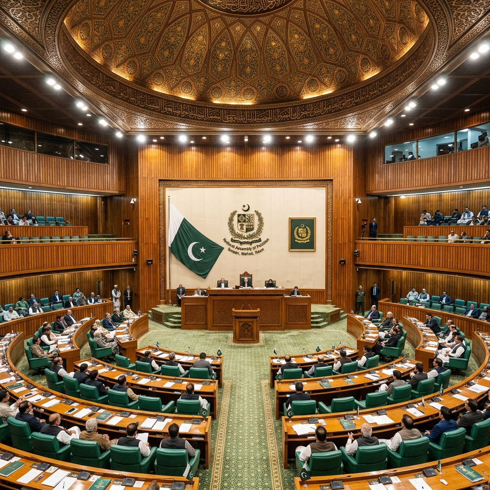

Est. 1973 Constitution
Parliamentary System
of Pakistan
Structure, working mechanisms, and challenges of Pakistan's Federal Parliamentary Republic — through 2026.
336
National Assembly Seats
96
Senate Seats
1973
Constitution Adopted

Parliament House · Islamabad, Pakistan
01 — Core Leadership
🏛️
Head of State
The President
Represents the unity of the Republic. A ceremonial role with constitutional powers including summoning/proroguing Parliament and granting assent to Bills.
⚖️
Head of Government
Prime Minister
Chief Executive of Pakistan, leads the Federal Cabinet, commands the majority in the National Assembly and is accountable to it.
📜
Foundation
1973 Constitution
Established the Federal Parliamentary Republic. The supreme law of the land, enshrining fundamental rights and the separation of powers across three branches.
02 — Majlis-e-Shoora (Structure)
The National Assembly (Lower House)
Lower House
National Assembly
The directly elected lower chamber — the supreme legislative body where governments are formed and fallen.
Elected for a 5-year term. Represents population demographics. All Money Bills must originate here.
336
Total Seats
General Seats 266
Reserved (Women) 60
Minorities 10
02 — Majlis-e-Shoora (Structure)
Upper House
Senate
96
Total Seats (post-FATA merger)
Staggered 6-year terms. Ensures equal provincial representation regardless of population. Each of the 4 provinces sends equal senators.
Third Pillar
The President
As the third pillar of Parliament, the President must give assent to Bills or return them for reconsideration. Forms the apex of the legislative triangle.
"The President shall be elected by members of both Houses of Parliament in joint sitting." — Article 41
02 — Majlis-e-Shoora (Visuals)

National Assembly Hall
Islamabad · Capacity 342

Senate Chamber
Islamabad · Upper House
03 — Legislative Engine
Law-Making Process
1
First Reading — Bill introduced, title read.
2
Second Reading — General principles debated, sent to Standing Committee.
3
Committee Stage — Clause-by-clause scrutiny and amendments.
4
Third Reading — Final vote in the house.
5
Other House — Same process repeated.
6
Presidential Assent — Bill becomes Act of Parliament.
Ordinary bills may originate in either house. However, Money Bills can only be introduced in the National Assembly. If both houses disagree, a joint sitting resolves the deadlock.
03 — Legislative Engine (Oversight)
Oversight
📋 Standing Committees
The backbone of parliamentary oversight. Each ministry has a corresponding committee that scrutinizes legislation and holds the executive accountable.
🔍
Scrutiny Role — Detailed examination of Bills.
📊
Oversight Role — Monitor executive performance.
Accountability
⚖️ Executive Accountability
The Prime Minister and Cabinet are collectively responsible to the National Assembly.
The Vote of No-Confidence mechanism allows Parliament to remove the PM when they lose majority support.
03 — Legislative Engine (Resolution)
Joint Sitting — Deadlock Breaker
📌
Resolving Deadlocks
When the two Houses disagree on a Bill, a Joint Sitting of both houses is convened. The Bill is passed if approved by a majority of total members present and voting in the joint sitting.
04 — Critical Issues
Presidential Ordinances
⚠️ Systemic Issue
Pakistan has a pattern of routine reliance on Presidential Ordinances to bypass standard parliamentary debate. Valid for 120 days unless approved.
🚫
Bypasses democratic deliberation.
🔄
Ordinances are often re-promulgated repeatedly.
04 — Critical Issues
Senate Limitation
Senate's Constrained Financial Role
The upper house has no veto power over Money Bills. It can only make recommendations within 14 days — which the NA may ignore.
Instability
🏚️ Political Instability
🤝
Coalition Fragility — Shifting alliances.
🪑
Opposition Boycotts — Paralyzed activity.
04 — Critical Issues
🗳️ Electoral Reforms
💻
EVMs — Digital voting transparency concerns.
🗺️
Delimitation — Constituency boundary controversies.
🌍
Overseas Voting — Diaspora participation rights.
05 — Historical Evolution
Parliament Through Time (Part 1)
1947
Independence — First Constituent Assembly established.
1956
First Constitution — Islamic Republic with a parliamentary system.
1962
Ayub Era — Presidential system introduced.
1973
Current Constitution — Restores parliamentary system.
05 — Historical Evolution
Parliament Through Time (Part 2)
2010
18th Amendment — Devolution of powers; Parliament strengthened.
2018
FATA Merger — Reshaping Senate composition to 96 seats.
2022
Historic No-Confidence — First successful removal of a sitting PM.
2024–26
Current Era — Institutional reforms and democratic consolidation.
05 — Historical Evolution (Process)
🔄 Legislative Flow Infographic
📝
Bill Introduced
Either house
🔬
Committee Scrutiny
Clause-by-clause
🗳️
House Vote
Final vote
🏛️
Other House
Same process
⚡
Joint Sitting
Deadlock resolver
✅
Presidential Assent
Act of Parliament
06 — Way Forward
A Resilient but Imperfect System
Pakistan's parliamentary system has demonstrated remarkable constitutional resilience — surviving military interventions, economic crises, and political turmoil. The 1973 Constitution remains the foundational document.
Yet the system faces structural weaknesses: executive dominance, weak committee culture, and Senate's limited financial role.
Yet the system faces structural weaknesses: executive dominance, weak committee culture, and Senate's limited financial role.
06 — Way Forward (Future)
01
Empower SenateExtend role in financial legislation.
02
Reduce OrdinancesConstitutional limit on re-promulgation.
03
Committee ReformStrengthen with research staff and binding powers.
04
Electoral IntegrityTransparent, technology-neutral reforms.
⚖️ Separation of Powers
🗳️ Democratic Maturity
🌟 2026 Outlook